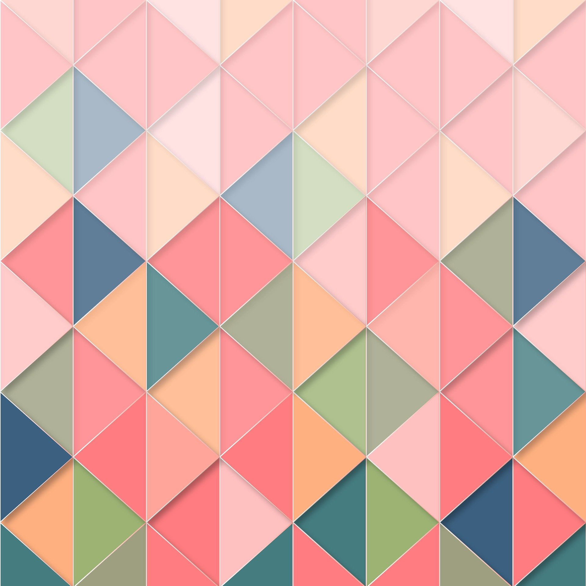

Here, the middle sections of the image are repeated to create the border:
border-image: url(border.jpg)
Here is the original image:
border image strching property 30 stretch.
border-image: url(images/border.jpg) 50 round;
border-image: url(images/border.jpg) 20% round;
border-image: url(images/border.jpg) 30% round;